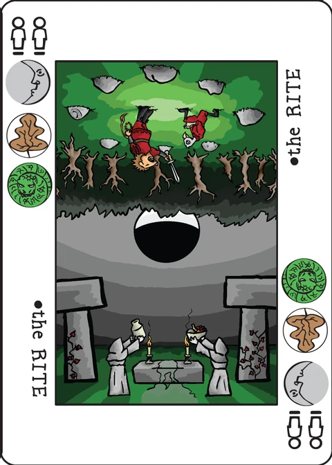

Quincunx
a tableaux-filling Decktet game for 2 to 4 players, plus a solitaire variant
| Designed by | Chris DeLeo |
|---|---|
| Players | 2–4 |
| Length | ? |
| Extra material | None |
The game is played on a five by five grid (the spread). On your turn, you add one card to the spread, score points depending on the connections between the played card and nearby cards, and possibly draw cards depending on those connections. You are penalized for any cards left in your hand at the end of the game.
Object of the game: To score points by placing cards.
Setup
Shuffle the deck, deal cards face up into the spread, then deal a hand of cards to each player.
With two players, deal 5 face up cards: one card in each corner of the spread and one in the center. Then deal each player a 10 card hand.
With three players, deal 4 face up cards: one card in each corner of the spread. Then deal each player a 7 card hand.
With four players, deal 5 face up cards: one card in each corner of the spread and one in the center. Then deal each player a 6 card hand.
Alternatively, start with 1 face up card in the spread and deal hands of 12/8/6 cards for 2/3/4 players, respectively. (See the Blank Slate variant for more details.)
Play begins with the player on the dealer's left and continues clockwise.
Game play
On your turn, take one card from your hand and place it into an openning in the spread. Each card you place in the spread may score points in several different ways. Total points any for basic scoring, pairs, sequences, and power plays. If the balance is negative, then you lose points for the turn.
Scoring the play
Basic scoring: Consider this card (the one you played) with respect to each horizontally or vertically adjacent card. If this card is at the edge of the spread or is next to an empty space, it does not score on that side.
Add the rank of the two cards together; Aces are 1, Crowns are 10, and other cards are as numbered.
- If the sum is 9 or less, one of the cards is an Ace, and the other card has a suit matching the Ace: Add points equal to the sum of the two cards.
- If the sum is 9 or less, without a matching Ace: Lose points equal to the sum of the two cards.
- If the sum is exactly 10: Score zero points.
- If the sum is exactly 11: Draw a card.
- If the sum is between 12 and 19: Add points equal to ten less than the sum; e.g. a sum of 14 scores 4 points.
- If the sum is exactly 20: Draw a card.
Note that card draws are cumulative. For example: Boris plays a Crown adjacent to an Ace, another Ace, and another Crown on three different sides. His Crown plus each Ace add to 11, and his Crown plus the other Crown add to 20. So he draws three cards.
Pair bonus: If this card is the same rank as an adjacent card, add 5 points. If this card matches more than one adjacent card, score for each pair.
Straight bonus: If this card completes a continuous line of three or more cards that are in rank order, add 20 points. Straights may be horizontal, vertical, or diagonal. Aces count as before 2, Crowns count as after 9, and straights may not wrap around. If you make more than one straight, score for each.
Three of a Kind bonus: If this card completes a continuous line of three or more cards of the same rank, add 30 points. Threes of a Kind may be horizontal, vertical, or diagonal. If you make more than one three of a kind, score for each. Cards that contribute to three of a kind may not be scored as pairs.
Although it is possible to score multiple straights or threes-of-a-kind, they must be in different lines. For example, playing in the middle of four card straight does not score the straight bonus twice; it doesn't count as two overlapping three card straights. However, playing so that your card completes two straights in two different directions does score twice (for 40 points).
Power Play: If this card is an Ace or Crown and you play it adjacent to an Ace or Crown of the same suit, then you score a power play. Add the total value of all other cards of showing suit in the spread. This may be as little as zero (if there are no other cards of that suit in the spread) or as many as 44 (if all the other cards of that suit are in the spread.)
Since the Ace and Crown sum to 11, you will draw a card as part of basic scoring when you make a power play.
End of the Round
The round ends when all 25 places in the spread have been filled. If you drew cards as the result of play during the round or if you are playing a four-player game, then you will have at least one card left over at the end. You lose points for each card left in your hand: Subtract the rank of each number card, subtract 10 for each Crown, and subtract 15 for each Ace.
A new round then begins, with the new dealer being the player on the old dealer's left. Since there is a definite advantage to going first and a disadvantage to going last, a game consists of one round with each player as dealer.
The extended deck
If you want to spice up the game, you can add in the Excuse, the Pawns, or both. Just shuffle them in at the beginning of the game. (The Excuse adds something to the game. The rules for Pawns really don't work out so well.)
The Excuse: The Excuse counts as a blank. It scores zero points when played in a spread, accrues no basic scoring when cards are played next to it, and exacts no penalty if still in hand at the end of the round.
Pawns: For the purpose of basic scoring, Pawns are counted as being rank 1. However, they also work like Aces; if a card and a Pawn sum to 9 or less, the points are added if the card and the Pawn share a suit but subtracted only if they do not. For the purpose of straights, Pawns are between 9s and Crowns. A Pawn in your hand at the end of the game costs 10 points.
Variants
Flush bonus: In this variant, there is a bonus for completing a configuration of four or more cards that share a suit. A flush may be in a straight line (including diagonals) or in a two-by-two box. This scores 10 points. It is possible to score for multiple flushes with a single play. Note that cards in a flush will also have other suits that they do not share, but there must be one single suit that they all do have.
Muggins: Players must explicitly announce what their play is worth after a card play. If a player fails to claim points to which they are entitled, other players who notice the extra points may steal them.
Blank slate: As an alternative way to setup and play the game, begin by dealing 24 cards equally among the players (6 each to 4 players, 8 each to 3 players, 12 each to 2 players) and dealing only 1 card face-up to the table. All cards played to this "blank slate" grid must be orthogonally adjacent to a card already on the table (beginning with the 1 face-up card, of course). The game will still end when a 5x5 grid is complete, but the bounds of that grid will not be determined at setup, but by play.
If the tableau of cards is already 5 cards tall or 5 cards wide, a player may not play a card that would make it taller or wider (respectively)—that dimension of the grid is set. Until the tableau reaches 5 cards tall or wide, cards may be played that would extend it in any direction. As a result, the starting card may ultimately be anywhere in the final grid: in the center, on a side, or in a corner. This dynamic grid shape and the adjacency rule provide for a game experience more focused on long-term planning.
(In the Revised and Expanded Decktet Book, starting with one card is the default rule, and starting with five cards already in play is listed as a variant.)
Solitaire
As a solitaire, Quincunx is played against the tableaux in an attempt to earn as many points as possible.
The solitaire game is played on a 4x4 grid. Starting cards are dealt in each of the four corners. Deal yourself an 8 card hand. Scoring is as per the usual rules, except that Straights and Threes of Kind may not be scored on diagonals.
If you run out of cards before completing the spread, you lose. This means that you will need to arrange basic scoring for 11 or 20 several times. Don't do it too many times, though, because cards in your hand at the end still count as a penalty.
Note on this implementation
This app implements the solitaire variant on its 4x4 grid with four corner cards and an 8 card hand, exactly as the Solitaire section describes. Straights and threes of a kind therefore never score on diagonals; basic scoring and pairs are orthogonal as always.
Two setups, one toggle. The wiki's default setup starts with five cards in a 5x5 spread, while the Blank Slate variant (the default in the revised Decktet Book) starts with a single card and an adjacency rule. The solitaire section's own setup (four corners) is the default here, and the Blank slate button switches to the alternative: one card anywhere on the 4x4 grid, a 12 card hand (the 2-player Blank Slate hand), and every later card must be played orthogonally adjacent to a card already in play. The wiki's dynamic grid bounds collapse to a fixed 4x4 grid in this solitaire app.
Running out of cards is a loss; filling the spread is a win, scored with the hand penalty (Aces −15, Crowns −10, number cards their rank) subtracted from the running total. Cards you draw on sums of 11 and 20 are added to your hand immediately — they help you keep playing but deepen the end-game penalty, which is the tension the wiki describes.
Pairs and threes of a kind. "Cards that contribute to three of a kind may not be scored as pairs" is applied per line: a same-rank neighbour that lies in a completed three-of-a-kind line through your played card scores no pair, while other same-rank neighbours still do. A line that scores a straight or a three of a kind does so once, no matter how long it is — four cards through your play is one straight (20), but two directions are two straights (40), as the wiki's example says.
Power play adds the ranks of every other card of the suit showing in the spread, including the ace or crown you played next to. The wiki's "as many as 44" counts the suit's numbered cards (2+…+9); aces and crowns of that suit count as well, so a full suit can total more.
The extended-deck cards (Excuse and Pawns) are not used in the solitaire game here; the app plays with the 36-card basic deck.
Credits
Original design: Chris DeLeo. Rules text: P.D. Magnus. Playtesting: John Milanese, Cristyn Magnus. Solitaire variant: Jack Neal.
Quincunx was designed by Chris DeLeo, with rules text by P.D. Magnus. These rules are copied from the Quincunx page of the Decktet wiki (page revision 22, 20 May 2025) so that they can be read offline, and are used under the wiki's CC BY-NC-SA 3.0 licence. The cards themselves are by P.D. Magnus, 2008–2010, same licence.
Further reading: The rules in printer-friendly minibook format · Quincunx at BGG